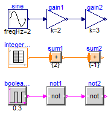
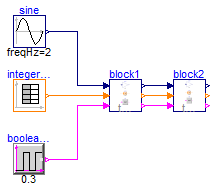

Simple series connection of two FMUs consisting of all basic data types (Real, Integer, Boolean) that are propagated
Information
Extends from Modelica.Icons.ExamplesPackage (Icon for packages containing runnable examples).
Package Content
| Name |
Description |
 Reference Reference
|
Reference solution in pure Modelica |
| WithFMUsReference
|
Reference solution in pure Modelica using exactly the same structuring as in Model WithFMUs |
| WithFMUs
|
Solution with FMUs |
 FMUModels FMUModels
|
For all models in this package an FMU must be generated |
Reference solution in pure Modelica

Information
Extends from Modelica.Icons.Example (Icon for runnable examples).
Modelica definition
model Reference
"Reference solution in pure Modelica"
extends Modelica.Icons.Example;
Modelica.Blocks.Sources.Sine sine(amplitude=1, freqHz=2);
Modelica.Blocks.Math.Gain gain1(k=2);
Modelica.Blocks.Math.Gain gain2(k=3);
Modelica.Blocks.Sources.IntegerTable integerTable(table=[0, 1; 0.2, 3; 0.4,
5; 0.6, 0; 0.8, 2; 0.9, 4]);
Modelica.Blocks.MathInteger.Sum sum1(nu=1, k={2});
Modelica.Blocks.MathInteger.Sum sum2(nu=1, k={-1});
Modelica.Blocks.Sources.BooleanPulse booleanPulse(period=0.3);
Modelica.Blocks.Logical.Not not1;
Modelica.Blocks.Logical.Not not2;
equation
connect(sine.y, gain1.u);
connect(gain1.y, gain2.u);
connect(integerTable.y, sum1.u[1]);
connect(sum1.y, sum2.u[1]);
connect(booleanPulse.y, not1.u);
connect(not1.y, not2.u);
end Reference;
Reference solution in pure Modelica using exactly the same structuring as in Model WithFMUs

Information
Extends from Modelica.Icons.Example (Icon for runnable examples).
Modelica definition
model WithFMUsReference
"Reference solution in pure Modelica using exactly the same structuring as in Model WithFMUs"
extends Modelica.Icons.Example;
Modelica.Blocks.Sources.Sine sine(amplitude=1, freqHz=2);
Modelica.Blocks.Sources.IntegerTable integerTable(table=[0, 1; 0.2, 3; 0.4,
5; 0.6, 0; 0.8, 2; 0.9, 4]);
Modelica.Blocks.Sources.BooleanPulse booleanPulse(period=0.3);
FMUModels.DifferentTypes1 block1;
FMUModels.DifferentTypes2 block2;
equation
connect(sine.y, block1.u1);
connect(integerTable.y, block1.u2);
connect(booleanPulse.y, block1.u3);
connect(block1.y1, block2.u1);
connect(block1.y2, block2.u2);
connect(block1.y3, block2.u3);
end WithFMUsReference;
Solution with FMUs
Information
Extends from Modelica.Icons.Example (Icon for runnable examples).
Modelica definition
model WithFMUs
"Solution with FMUs"
extends Modelica.Icons.Example;
Modelica.Blocks.Sources.Sine sine(amplitude=1, freqHz=2);
Modelica.Blocks.Sources.IntegerTable integerTable(table=[0, 1; 0.2, 3; 0.4,
5; 0.6, 0; 0.8, 2; 0.9, 4]);
Modelica.Blocks.Sources.BooleanPulse booleanPulse(period=0.3);
FMUModels.DifferentTypes1 block1;
FMUModels.DifferentTypes2 block2;
equation
connect(sine.y, block1.u1);
connect(integerTable.y, block1.u2);
connect(booleanPulse.y, block1.u3);
connect(block1.y1, block2.u1);
connect(block1.y2, block2.u2);
connect(block1.y3, block2.u3);
end WithFMUs;
Automatically generated Fri Apr 25 16:22:58 2014.
 FMITest.SimpleConnections.Series3.Reference
FMITest.SimpleConnections.Series3.Reference